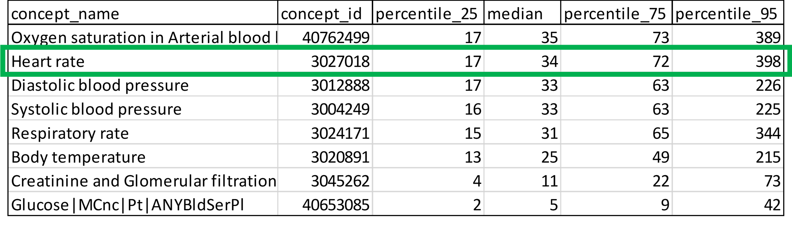
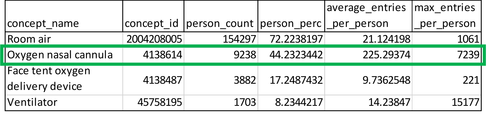

Updated: 7/26/2023C-PATH / JH guide to getting started with OMOP for CURE ID
Welcome
This site is designed to provide guidance, scripts and resources for sites transitioning data to OMOP common data model as part of CURE ID.
CURE ID is a platform designed and developed by the US Food and Drug Administration (FDA) and the National Institutes of Health (NIH) National Center for Translational Sciences (NCATS) to capture real world data (RWD) about how existing drugs are used in new ways (e.g., drug repurposing) to treat diseases of high unmet clinical need. The documentation on this site is part of a project funded by the US Department of Health and Human Services (HHS) Assistant Secretary for Planning and Evaluation (ASPE)’s Patient-Centered Outcomes Research Trust Fund (under Interagency Agreement #75F40121S35006) to develop and disseminate tools facilitating the extraction of RWD from the electronic health record (EHR).
Introduction
The goals of OMOP are to gain better understanding of human health by improving our ability to analyze observational health data.
Health data is stored by individual health systems in unique ways which limits the ability to collaborate and learn from larger populations. This is a problem because certain clinical conditions are infrequent and it is important to have sufficient number of cases to perform statistical tests. De-identified data shared across institutions has the promise of allowing scientists to develop important insights about health which is the motivation to enable greater collaboration.
What is a common data model?
A common data model (CDM) allows multiple health care systems with their individual databases to join forces creating greater populations which can power more compelling scientific studies. A simple way to think about this is the difficulty of finding the silverware drawer in a new kitchen – if there is a unifying rule for where the silverware drawer is located in every kitchen (immediately to right of the sink) it makes it possible to find this much easier. A common data model creates a system so that data elements like “systolic blood pressure” or “sepsis” are recorded and organized in the same way. OMOP stands for Observational Medical Outcomes Partnership and is the common data model of the Observational Health Data Sciences and Informatics program.
What is an ETL?
ETL stands for Extract, Transform, and Load. Essentially this is the process of mapping data from one system to another. Please see [The Book of OHDSI, Chapter 6] (https://ohdsi.github.io/TheBookOfOhdsi/ExtractTransformLoad.html).
Getting started
The code for the CURE ID project is hosted on GitHub. GitHub is a web-based platform that allows developers to host, review, and collaborate on code repositories. It is widely used for version control and source code management, and it provides features such as issue tracking, wikis, and project management tools to facilitate team collaboration.
The repository containing the code and concept sets can be accessed at OHDSI/CureIdRegistry There are four branches within the repository that differ only in the clinical variables included in the cohort curation scripts. Be sure to select the appropriate branch based on individual health system data and ETL capacity:
- Main branch: fundamental set of variables for Registry submission - demographics, comorbidities, vitals, labs, medications, vaccinations, oxygen devices, viral assays, and COVID complications.
- Refresh Basic: the main branch variables with additional concepts to allow for Charlson Comorbidity Index calculation
- Refresh Advanced: the refresh basic branch variables with additional concepts for Area Deprivation Index calculation (this branch requires Geocoding patient addresses to determine Census Blocks)
- Main CDM v5.3: this is the same set of variables included in the main branch but with cohort curation scripts written for the OMOP CDM version 5.3 (there are four fields names that changed from version 5.3 to 5.4)
CURE ID technical support checklist
- Core site team identified and technical kickoff call scheduled
- Determine feasibility of using Edge Tool Suite
- If using Edge Tool Suite is not possible, has the site determined a path forward, for example using Spectrum Health Scripts?
- Members of core team send proof of course completion to Danielle Boyce for the following free EHDEN academy courses:
- Site Completes CURE ID Manual OMOP Data Mapping Template
- JHU reviews steps for performing ETL process by walking through GitHub scripts
- Meetings with JHU software contractors arranged, if needed
- Site confirms that they are using most recent GitHub scripts before proceeding
- Data Quality Dashboard Run
- JSON and script output sent to Danielle Boyce
- DQD and concept counts approved or issues identified and reviewed with technical team
- DQD and concept counts re-run and approved by JHU technical team
- Run CURE ID scripts (see OMOP Cohort Creation and De-identification Guide)
- De-identified data exported to CSV file
- JHU/C-Path technical team reviews CSV files before transfer
- Any caveats in the data documented in Data Export Cover Sheet
- Data transfer arrangements made by contacting Smitty Heavner
OMOP Extract, Transform, and Load Guide
OHDSI ETL Resources
OHDSI ETL Steps
Find your people.
- Assemble ETL team: both data experts, medical experts, CDM/vocabulary experts
- Assign persons with medical knowledge to create code mappings
- Assign persons with technical knowledge to implement the ETL
- Schedule regular meetings for quality control maintenance
Understand your data.
- Take inventory of source data (tools: White Rabbit)
- List of tables in database
- List fields in each table
- List distinct values of each field
- Summarize the frequency of each value of each field.
- Define relationships between source data tables and fields (tools: Rabbit-in-a-Hat)
- Record both relationship definition decisions and reasoning behind these decisions
- Determine standardized vocabularies that already exist in your source data (ICD-10, CPT, HCPCS, LOINC, etc.)
- Many commonly used standardized coding systems have already been mapped to the OMOP vocabulary – utilize the work done by others across the OHDSI community to accelerate the process of mapping your data systems to OMOP.
- Determine the coding systems in your source data that are proprietary or not already mapped to OMOP (proprietary patient/visit identifiers, account numbers, charge codes, etc.)
- Take inventory of source data (tools: White Rabbit)
Map your codes to OMOP concepts.
- Summarize the frequency of each code from your source data code sets that will require mapping to OMOP concepts.
- Create your source data to OMOP mapping. (tools: Usagi)
- Assign this task to the ETL team members with appropriate medical knowledge to discern which codes are most synonymous based on their descriptions. Medical knowledge is key for this step as semantic understanding of clinical descriptions is required to make decisions on mapping source data concepts to OMOP concepts.
- Start with the most frequently used codes and determine your threshold of code frequency to include in the mapping.
- Focus on a particular project or clinical domain to limit the scope of data needed for capture and conversion to OMOP.
- Utilize the Usagi tool for mapping suggestions and searching based on similarity of code descriptions.
OMOPify your data!
- Determine the technology and software used or approved at your site for data storage, querying, and transfer. Determine the tools and technologies that team members and internal staff have expertise in.
- Generate the OMOP DDLs
- Using R: https://github.com/OHDSI/CommonDataModel
- Using SQL: https://github.com/OHDSI/CommonDataModel/tree/v5.4.0/inst/ddl/5.4
- Implement the ETL.
- Assign this task to the ETL team members with technical knowledge and permission for accessing and extracting source data and writing to a database.
- Many tools and technologies can be used for this step. Utilize the existing tools, technologies, and expertise of your ETL team and internal staff.
Evaluate your data.
- Involve everyone in the evaluation and maintenance of ETL and data quality.
- Review the ETL design documentation, computer code used in implementation, and concept mappings
- Perform a manual audit using a sample of patients from both source data and derived OMOP data
- Compare summary level counts of key fields between source data and OMOP derived data. (tools: Achilles)
★ Ask for help along the way!
The CURE ID support team is here to help you. We also encourage you to connect with the OHDSI community to find others with experience, expertise, and guidance for each step of your ETL to OMOP journey. The open, collaborative community of OHDSI is the most powerful tool at your disposal. Use it (us)!
Places to Connect
OHDSI.org: https://www.ohdsi.org/
OHDSI Wiki: https://www.ohdsi.org/web/wiki/doku.php
OHDSI Forums: https://forums.ohdsi.org/
OHDSI Workgroups: https://www.ohdsi.org/workgroups/
OMOP Cohort Creation and De-identification Guide
The following scripts are to be run on a site’s full OMOP dataset in order to prepare the relevant data for sharing with the VIRUS registry. Each script should be run on the same server as the OMOP data but can be customized to run on the preferred Database and Schema.
Instructions: Replace the database name and schema in each of these scripts with your own, then run the cohort creation and deidentification scripts in the following sequence:
01 – Cohort Creation........................... (Filename: 01_CURE_ID_Cohort.sql)
02 – Generate CURE ID Tables............ (Filename: 02_CURE_ID_All_Tables.sql)
03 – Deidentify Rare Conditions………. (Filename: 03_CURE_ID_replace_rare_conditions_with_parents.sql)
04 – Generate OMOP Tables………….. (Filename: 04_DE_ID_CDM_Table_ddl.sql)
05 – Remove Identifiers…………………. (Filename: 05_DE_ID_script.sql)
06 – Run Data Quality Checks…………. (Filename: 06_DE_ID_Quality_Checks.sql)
07-A – Profile Conditions..................... (Filename: 07_A_condition_profile.sql)
07-B – Profile Measurements…………. (Filename: 07_B_measurement_profile.sql)
07-C – Profile Drug Exposure………….. (Filename: 07_C_drug_exposure_profile.sql)
07-D – Profile Unmapped Drugs......... (Filename: 07_D_review_unmapped_drugs.sql)
07-D – Profile Devices……………………. (Filename: 07_E_device_profile.sql)
OMOP Cohort Creation and Deidentification Process:
01 – Cohort Creation Script
Filename: 01_CURE_ID_Cohort.sql
Purpose: This script creates a cohort of patients for the CURE ID registry. The patient list is saved in the cohort table, along with other useful data elements.
Description: This SQL script creates a cohort of COVID-positive hospitalized patients based on specific criteria. The script performs several steps to identify and filter the patients before finally creating the cohort table. The script sets the context to use a specific database, but the actual name of the database is meant to be provided by the user.
Steps:
1) Create cohort table.
2) Identify patients (inpatient and outpatient) with covid positive lab results
a. Use OMOP concepts that represent the LOINC codes for SARS-COV-2 nucleic acid test
b. The concept ids here represent LOINC or SNOMED codes for standard ways to code a lab that is positive.
3) Identify the first positive covid test per patient (after January 1, 2020).
4) Limit to covid-positive patients with inpatient encounters.
5) Apply all inclusion/exclusion criteria to identify all patients hospitalized with symptomatic covid-19 up to 21 days after a positive SARS-CoV-2 test or up to 7 days prior to a positive SARS-CoV-2 test
6) Find the closest inpatient encounter to first positive SARS-COV-2 test (for patients hospitalized more than once)
7) Account for edge cases where patients have two hospitalizations same number of absolute days from SARS-COV-2 test (Ex: Patient hospitalized separately 3 days before and 3 days after SARS-COV-2 test)
8) Create the cohort by adding on birth date and death date
02 – CURE ID Tables Script
Filename: 02_CURE_ID_All_Tables.sql
Purpose: This script takes your OMOP dataset and generates a copy of key tables that have been filtered down to only include people and records related to the CURE ID registry.
Description: Creates CURE_ID tables from the generated CURE_ID cohort.
Dependencies: This script depends on CURE_ID_Cohort.sql, and must be run after that script completes
Steps:
1) Load Person table
2) Load Measurements table
3) Load Drug Exposure table
4) Load Death table
5) Load Observation data
6) Load Procedure Occurrence Table
7) Load Condition Occurrence Table
8) Load Visit Occurrence table
9) Load Device Exposure table
03 – Replace Rare Conditions Script
Filename: 03_CURE_ID_replace_rare_conditions_with_parents.sql
Purpose: Replace conditions occurring 10 or less times in the dataset with parent concepts that have at least 10 counts
Dependencies: This script requires the cohort table built from 01_CURE_ID_Cohort.sql, and the data loaded into the Condition Occurrence table built from 02_CURE_ID_All_Tables.sql.
Steps:
1) Condition roll up: concepts are mapped to their corresponding ancestor concept(s)
2) Create table that counts the ancestor concepts for each original concept
3) Create table that counts the original concepts
4) Filter to only include conditions that have more than 10 counts
5) Get just the most specific condition in the ancestor-descendent hierarchy
04 – Deidentified Data DDL Script
Filename: 04_DE_ID_CDM_Table_ddl.sql
Purpose: Generate the necessary tables for the de-identified version of the CURE ID Cohort
Dependencies: None
Customization: By default, this script will create tables in the Results schema, and will preface the table names with ‘deident,’ however this can be set to whatever value you desire.
Steps:
1) Create the Person table
2) Create the Death table
3) Create the Visit Occurrence table
4) Create the Drug Exposure table
5) Create the Device Exposure table
6) Create the Condition Occurrence table
7) Create the Measurement table
8) Create the Observation table
05 – Deidentification Script
Filename: 05_DE_ID_script.sql
Purpose: This script creates a copy of the Cohort and removes identifying characteristics to prepare the data for sharing with the VIRUS registry.
Dependencies: This script requires the cohort table built from 01_CURE_ID_Cohort.sql, and the data loaded into all tables built from 02_CURE_ID_All_Tables.sql, rare conditions replace from 03_CURE_ID_replace_rare_conditions_with_parents.sql, and the de-identified OMOP CDM tables generated from 04_DE_ID_CDM_Table_ddl.sql.
Description: Run this file to generate a deidentified copy of your target data. Insert your data into the OMOP tables, and de-identify person_id, and date fields using date.shift. (*If a person is 90 years of age or older, assign a random age between 90-99 years.)
Steps:
1) Use find and replace to set source and target DB and Schema names
2) Load the OMOP Person table, and de-identify
3) Load the OMOP Visit Occurrence table, and de-identify
4) Load the OMOP Condition Occurrence table, and de-identify
5) Load the OMOP Procedure Occurrence table, and de-identify
6) Load the OMOP Drug Exposure table, and de-identify
7) Load the OMOP Observation table, and de-identify
8) Load the OMOP Death table, and de-identify
9) Load the OMOP Device Exposure table, and de-identify
10) Load the OMOP Measurement table, and de-identify
Reassignment of Person IDs:
· Person IDs are regenerated sequentially from a sorted copy of the Person table. These new Person IDs are carried throughout the CDM to all tables that reference it.
Date Shifting:
· Each person is assigned a random date shift value between -186 and +186 days. All dates for that person are then shifted shifted by that amount.
· Birthdays: After date shifting a person’s birthday, the day is then set to the first of the new birth month. If the person would be > 89 years old then they are assigned a random birth year that would make them 90-99 years old.
Date Truncation:
· A user-defined Start and End date are used to exclude any date shifted data that falls outside of the target date range (E.G. Procedures, conditions occurrences, etc. Does not include Birthdates).
Removal of other identifiers:
· Other potentially identifying datapoints are removed from the dataset such as location_id, provider_id, and care_site_id
06 – Quality Checks Script (optional)
Filename: 06_DE_ID_Quality_Checks.sql
Purpose: This script checks basic metrics for each table in the deidentified dataset to ensure the previous scripts were successful. This does
Description: This script runs a number of summary level quality checks for each table to audit basic data counts and date ranges.
Dependencies: This script requires the populated deidentified OMOP tables generated from the sequence of running:
01_CURE_ID_Cohort.sql,
02_CURE_ID_All_Tables.sql,
03_CURE_ID_replace_rare_conditions_with_parents.sql,
04_DE_ID_CDM_Table_ddl.sql,
05_DE_ID_script.sql
Steps:
1) Count distinct person_ids and find the maximum and minimum birthdates in the OMOP Person table.
2) Count distinct person_ids in the OMOP Death table.
3) Count distinct person_ids, count number of records per observation_concept_id, and find the maximum and minimum observation dates for all records in the OMOP Observation table.
4) Count distinct person_ids, count number of records per procedure_concept_id, and find the maximum and minimum procedure dates for all records in the OMOP Procedure Occurrence table.
5) Count distinct person_ids, count number of records per condition_concept_id, and find the maximum and minimum condition dates for all records in the OMOP Condition Occurrence table.
6) Count distinct person_ids, count number of records per measurement_concept_id, and find the maximum and minimum measurement dates for all records in the OMOP Measurement table.
7) Count distinct person_ids, count number of records per device_concept_id, and find the maximum and minimum device exposure dates for all records in the OMOP Device Exposure table.
8) Count distinct person_ids, count number of records per drug_concept_id, and find the maximum and minimum drug exposure dates for all records in the OMOP Drug Exposure table.
07 – Cohort Profile Scripts
Dependencies: These scripts require the populated deidentified OMOP tables generated from the sequence of running scripts 1-5:
01_CURE_ID_Cohort.sql,
02_CURE_ID_All_Tables.sql,
03_CURE_ID_replace_rare_conditions_with_parents.sql,
04_DE_ID_CDM_Table_ddl.sql,
05_DE_ID_script.sql
07-A – Condition Profile
Filename: 07_A_condition_profile.sql
Purpose: Generate a profile of condition prevalence in the final cohort.
Description: Condition counts are calculated per patient and are aggregated by parent concepts for each condition concept present in the final OMOP Condition Occurrence table.
07-B – Measurement Profile
Filename: 07_B_measurement_profile.sql
Purpose: Generate a profile of measurement prevalence in the final cohort.
Description: Measurement counts are calculated per patient and are aggregated by parent concepts for each measurement concept present in the final OMOP Measurement table.
07-C – Drug Exposure Profile
Filename: 07_C_drug_exposure_profile.sql
Purpose: Generate a profile of drug prevalence in the final cohort.
Description: Drug counts are calculated per patient and are aggregated by ingredient for each drug concept present in the final OMOP Drug Exposure table.
07-D – Unmapped Drugs Profile
Filename: 07_D_review_unmapped_drugs.sql
Purpose: Generate a profile of drugs that are not mapped to drug_concept_ids in the final cohort.
Description: This file filters drugs that were unsuccessfully mapped to a drug_concept_id when running the 02_CURE_ID_All_Tables.sql script. Drug source values for which the drug_concept_id is “0” and have at least 20 instances in the final cohort are aggregated for manual review.
** Drug source values can contain PHI. Please review the output for PHI before sharing.
07-E – Device Profile
Filename: 07_E_device_profile.sql
Purpose: Generate a profile of device prevalence in the final cohort.
Description: Device counts are calculated per patient and are aggregated by parent concepts for each device concept present in the final OMOP Device Exposure table.
CURE ID Profile Scripts – Output & Interpretation
This section provides synthetic examples of the output generated from the CURE ID person measurement drug exposure and device profile SQL scripts as well as examples of how to interpret the output from each script.
07_A_condition_profile.sql
Generates a table showing condition prevalence in cohort by individual condition concept.
Example Interpretation
In the highlighted row, the table shows that 6499 patients in the cohort have a recorded diagnosis of hypertension, representing 58% of the total cohort.

07_B_measurement_profile.sql
Generates a table which includes the measurement concepts included in the cohort and their names.
Example Interpretation
The highlighted row shows the distribution of the number of times heart rate was measured per patient in the cohort. 25% of the patients had 17 heart rate measurements or less. 50% of patients had at least 34 heart rate measurements recorded. 75% of patients had at most, 72 heart rate measurements recorded. 95% of patients had at most, 398 heart rate measurements recorded. The four columns can also be interpreted as the median for the bottom 50% (percentile_25), overall median (median), median for the top 50% (percentile_75), and the median for the top 10% (percentile_95) – in terms of how many times the measurement was taken for each patient in the cohort.

07_C_drug_exposure_profile.sql
Generates a table of all drugs given in the cohort.
Example Interpretation
The highlighted row shows that acetaminophen was administered to 7,937 total patients which represents 68% of the patients in the cohort. Acetaminophen was administered an average of 2 times per patient with the highest recorded value of 26 administrations for a single patient.
It is important to note that these are ingredients - which is why sodium chloride is the most frequent “drug” because most IV drugs contain sodium chloride as an ingredient.

07_E_device_profile.sql
Generates a table which includes the device concepts included in the cohort and their counts.
Example Interpretation
The highlighted row shows that an oxygen nasal cannula device was used for 9,238 patients in the cohort. That patients count represents 44% of the total cohort. Use of this device was recorded an average of 225.3 times per patient, with a maximum of 7,239 recordings for a single patient, when counting all flowsheet entries.

OMOP Table and Field Basics
Adapted from OHDSI CDM Site: Data Model Conventions
Tables
For the tables of the main domains of the CDM it is imperative that concepts used are strictly limited to the domain. For example, the CONDITION_OCCURRENCE table contains only information about conditions (diagnoses, signs, symptoms), but no information about procedures. Not all source coding schemes adhere to such rules. For example, ICD-9-CM codes, which contain mostly diagnoses of human disease, also contain information about the status of patients having received a procedure. The ICD-9-CM code V20.3 ‘Newborn health supervision’ defines a continuous procedure and is therefore stored in the PROCEDURE_OCCURRENCE table.
Fields
Variable names across all tables follow one convention:
| Notation | Description |
| _SOURCE_VALUE | Verbatim information from the source data, typically used in ETL to map to CONCEPT_ID, and not to be used by any standard analytics. For example, CONDITION_SOURCE_VALUE = ‘787.02’ was the ICD-9 code captured as a diagnosis from the administrative claim. |
| _ID | Unique identifiers for key entities, which can serve as foreign keys to establish relationships across entities. For example, PERSON_ID uniquely identifies each individual. VISIT_OCCURRENCE_ID uniquely identifies a PERSON encounter at a point of care. |
| _CONCEPT_ID | Foreign key into the Standardized Vocabularies (i.e. the standard_concept attribute for the corresponding term is true), which serves as the primary basis for all standardized analytics. For example, CONDITION_CONCEPT_ID = 31967 contains the reference value for the SNOMED concept of ‘Nausea’ |
| _SOURCE_CONCEPT_ID | Foreign key into the Standardized Vocabularies representing the concept and terminology used in the source data, when applicable. For example, CONDITION_SOURCE_CONCEPT_ID = 45431665 denotes the concept of ‘Nausea’ in the Read terminology; the analogous CONDITION_CONCEPT_ID might be 31967, since SNOMED-CT is the Standardized Vocabulary for most clinical diagnoses and findings. |
| _TYPE_CONCEPT_ID | Delineates the origin of the source information, standardized within the Standardized Vocabularies. For example, DRUG_TYPE_CONCEPT_ID can allow analysts to discriminate between ‘Pharmacy dispensing’ and ’Prescription written |
For more information, see:
Cure ID Concept Mapping Support

Collaborative OMOP Concept Mapping Process
CureID clinical informaticists work with each site to manually map internal concepts to OMOP concepts outlined for capture in the project plan.
The combined concepts from all sites are maintained as a single, updated concept set using the OHDSI ATLAS open-source tool.
All concepts currently identified by the work between CureID staff and each site, and all corresponding descendant concepts are exported from ATLAS as .json or .csv files for use in cohort creation, profiling, and clinical registry submission.
Identifying Oxygen Devices in Epic/Clarity
Identifying Oxygen Devices Flowsheet Measures to Map to OMOP Concepts
Geocoding and Integrating SDOH Data
To link geocoded addresses to the Neighborhood Atlas for getting the Area Deprivation Index (ADI) for patients in a dataset, you will typically follow these steps:
- Prepare Your Dataset Patient Data: Ensure you have a dataset of patients with addresses. This data should be anonymized to protect patient privacy. Geocoding: Each address needs to be geocoded. Geocoding is the process of converting addresses into geographic coordinates (latitude and longitude).
- Geocoding Addresses Use a Geocoding Service: Tools like Google Maps API, ArcGIS, or OpenStreetMap can be used to geocode addresses. This will give you the precise geographic location for each address. Accuracy Check: Ensure the geocoding is accurate. Incorrect geocoding can lead to wrong ADI assignments.
- Understanding the Neighborhood Atlas ADI Overview: The ADI is a measure developed by the Neighborhood Atlas. It provides a ranked and searchable list of neighborhoods according to their level of disadvantage. Data Format: Understand the format of the Neighborhood Atlas data. It typically includes geographical identifiers like census tracts.
- Linking Geocoded Data to the Neighborhood Atlas Match Coordinates with Census Tracts: Use the geographic coordinates to determine the corresponding census tract for each patient. This can be done using GIS software like ArcGIS or QGIS. Cross-Reference with ADI Data: Once you have the census tract for each patient, cross-reference these with the Neighborhood Atlas to find the ADI for each tract.
- Integrating ADI into Your Dataset Add ADI to Patient Records: For each patient, add the ADI corresponding to their census tract. This step integrates socioeconomic context into your patient data.
Geocoding
The primary consideration for linking geospatial data like social determinants of health and environmental risk factors with patient data is protecting PHI when geocoding patient home address and location data. Do not use web-based API services for geocoding as they require patient addresses to be sent to an external server for batch geocoding. Geocoding will require software that can match patient addresses to the appropriate shapefiles to determine a precise location and output latitudinal/longitudinal coordinates. Two software solutions for geocoding include: - Use ESRI ArcGIS or a similar program that can perform geocoding locally and has all appropriate shapefiles downloaded. This software is expensive, but many institutions have a license already in place. - Install geocoding software (ex: open-source, Degauss geocoder: https://www.degauss.org/geocoder) locally via manual installation or by installing a docker container.
Area Deprivation Index
The Area Deprivation Index (ADI) is based on a measure created by the Health Resources & Services Administration (HRSA) over three decades ago, and has since been refined, adapted, and validated to the Census block group neighborhood level by Amy Kind, MD, PhD and her research team at the University of Wisconsin-Madison. It allows for rankings of neighborhoods by socioeconomic disadvantage in a region of interest (e.g., at the state or national level). It includes factors for the theoretical domains of income, education, employment, and housing quality. It can be used to inform health delivery and policy, especially for the most disadvantaged neighborhood groups. “Neighborhood” is defined as a Census block group.
from: https://www.neighborhoodatlas.medicine.wisc.edu/
ADI as an OHDSI Concept
ADI is not included as an explicit concept in any of the appropriate standard vocabularies. The OHDSI Vocabularies Team recommended that this information be included in the OMOP data as a custom concept in the Observation table. The workflow will be simply to add a line item to the concept mapping table for Area Deprivation Index like the following example: concept_id = 2000000999 concept_code = NA concept_name = Area deprivation index domain = observation vocabulary = Custom is_standard = C include_descendents = False
OHDSI Tool Suite
The Edge Tool Suite are a set of OHDSI tools that should be deployed by the site that provide value around the OMOP CDM. This work was funded by the CURE ID initiative https://cure.ncats.io
The OHDSI open source software configured for deployment include:
The Atlas data science platform
The WebAPI backed for Atlas
The HADES statistical analysis packages
The Data Quality Dashboard
The Perseus ETL management system
Simplifying the ETL process
The OHDSI community has created a series of individual software packages to facilitate the ETL from proprietary EHRs to OMOP, evaluate data quality, define cohorts, and perform analyses. The “Edge Tool” packages these individual tools to facilitate the performance of an OMOP ETL and subsequent use of the data for defining cohorts for observational research. In contrast to registry approaches which ingest data represented in various data models and perform data harmonization centrally, software components of the “Edge Tool” facilitate ETL performance locally at the “edge.” This suite of software aims to drastically reduce the labor and effort required to go from “zero to OMOP.” We anticipate that institutions that use the full suite of offered software will be able to reduce the person-hours required for an OMOP ETL to as little as 50 hours.
Software components
The Edge Tool encompasses the Perseus ETL management solution, the HADES R analysis package within an RStudio Server R integrated development environment, and the ATLAS cohort discovery tool with WebAPI web services integration (Figure). The Perseus graphic-user interface (GUI) approach provides source-to-concept mapping for the ETL, with assisted extraction of data from EHR such as flowsheets (vital signs, nursing assessments), test measurements, and diagnoses. Rather than performing a series of SQL queries with wildcards to identify data elements of interest from primary source EHR tables,users may enter desired data element terms into a browser text field which are then matched using term similarity to source table entries.Users may then evaluate the completeness and quality of the ETL using the Data Quality Dashboard which performs >3,000 individual data quality checks on the OMOP-formatted data and is reported through a web-based reporting system.
In tandem with Perseus, OHDSI HADES and OHDSI ATLAS are the two projects within the Edge Tool that allow for advanced analysis once data has been harmonized with the OMOP CDM, such as generating cohorts for research, patient level prediction, treatment pathways, large scale population analytics, automated reporting and, optionally, participation in OHDSI network studies.The OHDSI applications within the Edge Tool have been containerized using OHDSI Broadsea, allowing for even easier deployment. Current use of the Edge Tool has proven promising and while limitations still exist - e.g., not currently capable of extracting data from unstructured fields such as notes or loose text - further process optimization and tool development will reduce this implementation time and effort further.
Ways to deploy the software
- Cloud vendor software configured for use.
OHDSI on Azure (Includes Perseus, Atlas, and Hades)
OHDSI on AWS (Includes Atlas and Hades)
- Broadsea provides a set of docker containers that ease the cost of implementation
Broadsea (Includes Atlas and Hades)
- Sites can compile the tools from the source repositories
OHDSI Specific
https://github.com/OHDSI/CommonDataModel
The ETL Process
https://github.com/OHDSI/Perseus
ATLAS and Cohort Discovery
Broadsea
Data Analysis
https://github.com/OHDSI/Achilles
Best Practices
Data Quality Dos and Don’ts
Do install the Data Quality Dashboard early on in the process.
Don’t include source values in your export.- they might include PHI.
Don’t forget to check GitHub for the most recent version of the script before you run it.
Don’t send your data to the coordinating center until the tech team has a chance to review it with you in a live session.
Manuscripts
Webinars
OMOP Scripts for Epic
“The Spectrum Code”: scripts and documentation created by Roger Carlson at Corewell Health
RUMC OMOP transition scripts from Clarity, Caboodle: Code created by Rush University Medical Center
Using synthetic data
MIMIC-IV 100-patient demo dataset based on MIMIC to create a OMOP instance
Synthea GitHub site with files to use the synthetic patient generator Synthea
Eunomia LInk to the Eunomia GitHub.io site with instructions and standard dataset files
Useful Resources
Web site for the OHDSI community: http://www.ohdsi.org
The Book of OHDSI: What is OHDSI and why should I care?
EHDEN Academy : EHDEN Academy is a site with courses for developing skills working with OHDSI
Tutorials & Workshops : Tutorial sessions 1-8 provide a comprehensive overview from vocabularies and creating cohorts to prediction
OHDSI Forums : Searchable, active user community
OHDSI Community Dashboard : Tracks publications, citations, researchers and activity within the OHDSI community
Clinical Registry Efforts Within OHDSI (Sept. 13 Community Call): Video discussing Perseus and Broadsea
OHDSI-in-a-Box on GitHub : A learning environment created for the OHDSI community
Integrating Flowsheet Data in OMOP Common Data Model for Clinical Research Paper written by informatics teams at Stanford University and The Hospital for Sick Children
Guide to privacy issues in OMOP journey: Article outlining how to manage protected health information
DQD GitHub repository for Data Quality Dashboard tool
PheKB A phenotype repository
Analyze observational patient data by using OHDSI with the OMOP CDM Microsoft guide to OMOP CDM
OHDSI on Azure GitHub Automation code and documentation for deploying OHDSI CDM in Azure
OHDSI/Perseus GitHub site OHDSI/Perseus on GitHub
How to develop capacity for observational research within a health system Presentation on building capacity from 2022 OHDSI Collaborator Showcase
DBoyce Training Resources
Danielle Boyce’s compilation of training resources
Table of Contents
- OHDSI_Resources
- OMOP CDM Basic Data Dictionary
- Projects Best Suited for Observational Research and OHDSI Network Studies
- Analytic Use Cases and Examples
- Data Content Ontology
- Current CDM
- Commonly Used CDM Tables Overview
- ETL Basics
- OHDSI Analysis Tools
- Current CDM
- Commonly Used CDM Tables Overview
- ETL Basics
- OHDSI Analysis Tools
- Data Science Handbook
- Recommended Trainings
OMOP CDM Basic Data Dictionary
For a sample interactive OMOP data dictionary, please click on the image below: 
(This is the exact same table as in the image above only in Markdown)
Analytic Use Cases and Examples
| Analytic use case | Type | Structure | Example |
|---|---|---|---|
| Clinical characterization | Disease Natural History | Amongst patients who are diagnosed with <insert your favorite disease>, what are the patient’s characteristics from their medical history? |
Amongst patients with rheumatoid arthritis, what are their demographics (age, gender), prior conditions, medications, and health service utilization behaviors? |
| Treatment utilization | Amongst patients who have <insert your favorite disease>, which treatments were patients exposed to amongst <list of treatments for disease> and in which sequence? |
Amongst patients with depression, which treatments were patients exposed to SSRI, SNRI, TCA, bupropion, esketamine and in which sequence? | |
| Outcome incidence | Amongst patients who are new users of <insert your favorite drug>, how many patients experienced <insert your favorite known adverse event from the drug profile> within <time horizon following exposure start>? |
Amongst patients who are new users of methylphenidate, how many patients experienced psychosis within 1 year of initiating treatment? | |
| Population-level effect estimation | Safety surveillance | Does exposure to <insert your favorite drug> increase the risk of experiencing <insert an adverse event> within <time horizon following exposure start>? |
Does exposure to ACE inhibitor increase the risk of experiencing Angioedema within 1 month after exposure start? |
| Comparative effectiveness | Does exposure to <insert your favorite drug> have a different risk of experiencing <insert any outcome (safety or benefit)> within <time horizon following exposure start>, relative to <insert your comparator treatment>? |
Does exposure to ACE inhibitor have a different risk of experiencing acute myocardial infarction while on treatment, relative to thiazide diuretic? | |
| Patient level prediction | Disease onset and progression | For a given patient who is diagnosed with <insert your favorite disease>, what is the probability that they will go on to have <another disease or related complication> within <time horizon from diagnosis>? |
For a given patient who is newly diagnosed with atrial fibrillation, what is the probability that they will go onto to have ischemic stroke in next 3 years? |
| Treatment response | For a given patient who is a new user of <insert your favorite chronically-used drug>, what is the probability that they will <insert desired effect> in <time window>? |
For a given patient with T2DM who start on metformin, what is the probability that they will maintain HbA1C <6.5% after 3 years? | |
| Treatment safety | For a given patient who is a new user of <insert your favorite drug>, what is the probability that they will experience <insert adverse event> within <time horizon following exposure>? |
For a given patient who is a new user of warfarin, what is the probability that they will have GI bleed in 1 year? |
Important Paper About Implementation of the OMOP CDM! Erica A Voss, Clair Blacketer, Sebastiaan van Sandijk, Maxim Moinat, Michael Kallfelz, Michel van Speybroeck, Daniel Prieto-Alhambra, Martijn J Schuemie, Peter R Rijnbeek, European Health Data & Evidence Network—learnings from building out a standardized international health data network, Journal of the American Medical Informatics Association, 2023;, ocad214
Data Content Ontology

Overview of Major Clinical Terminologies and Coding Systems
This document provides a detailed overview of several essential clinical terminologies and coding systems used in healthcare. Each system has a specific role and is crucial for standardized communication in healthcare settings. The information includes development history, usage, and updates of these systems.
For more in-depth information, links to the respective official websites are provided.
SNOMED Clinical Terms (SNOMED CT) - Development: Originally by the College of American Pathologists, now under SNOMED International. - Adoption: Used in over 50 countries. - Concepts: Over 340,000 active concepts in 19 hierarchies. - Usage: Encodes clinical information including diseases, findings, and procedures. - Updates: Biannual, with more frequent updates planned. - More Information: SNOMED International
Logical Observation Identifiers Names and Codes (LOINC) - Developer: Regenstrief Institute. - Function: Identifiers for laboratory and clinical observations. - Content: Over 90,000 terms. - Collaboration: With SNOMED CT for coded content development. - Updates: Biannual. - More Information: LOINC
RxNorm - Developer: National Library of Medicine (NLM). - Function: Standard nomenclature for medications. - Integration: Links to various drug vocabularies. - Access: Requires UMLS user license for proprietary content. - More Information: RxNorm - NLM
International Classification of Disease (ICD) - Endorsement: World Health Organization (WHO). - Versions: ICD-10 widely used with national extensions; ICD-11 adopted for future use. - Purpose: Epidemiology, health management, clinical purposes. - Updates: Annual, freely available. - More Information: WHO ICD
Current Procedural Terminology (CPT) - Developer: American Medical Association (AMA). - Use: Encoding of medical services and procedures in the USA. - Categories: Three categories of codes. - Requirement: License from AMA for use. - More Information: CPT - AMA
Human Phenotype Ontology (HPO) - Function: Bioinformatic resources for human diseases and phenotypes analysis. - Components: Phenotype vocabulary, disease-phenotype annotations, algorithms. - Applications: Genomic interpretation, gene-disease discovery, precision medicine. - Content: Over 13,000 terms in 5 hierarchies. - Availability: Freely available, multiple releases per year. - More Information: Human Phenotype Ontology
Unified Medical Language System (UMLS) - Initiation: By the US National Library of Medicine in 1986. - Goal: To aid in the retrieval and integration of electronic biomedical information. - Challenge Addressed: Different vocabularies expressing the same information differently. - Availability: Free, but requires a license due to additional licensing requirements of some contents. - More Information: UMLS - NLM
Ontology Mapping in BioPortal Applications - Process: Finding the closest match of a code from one ontology in another. - Matching: Exact equivalence is rare; approximate matching is common. - Challenges: Labor-intensive and requires understanding the maps’ nature and limitations. - Alternative Approach: Mapping multiple ontologies to a central core terminology, as used by the OHDSI consortium. - More Information: BioPortal
<div style="text-align: right"><a href="#table-of-contents">Back to Table of Contents</a></div>OMOP Domains by Source to Standard Vocabulary
graph LR
ICD9("ICD9") -->|Transformation to OMOP CDM| SNOMED("STANDARD<br>Vocabulary Concept Code<br>SNOMED")
ICD10("ICD10") -->|Transformation to OMOP CDM| SNOMED| Domain | Source Vocabulary | Standard Vocabulary |
|---|---|---|
| Conditions | ICD9, ICD10 | SNOMED |
| Measurements | LOINC or institutional specific codes | LOINC |
| Drugs | NDC | RxNORM |
| Procedures | ICD9, ICD10, CPT | SNOMED |
ICD = International Classification of Diseases
SNOMED = Systematized Nomenclature of Medicine
LOINC = Logical Observation Identifiers Names and Codes
NDC = National Drug Code
CPT = Current Procedural Terminology
Current CDM

Source: OHDSI Common Data Model
Commonly Used CDM Tables Overview
The OMOP common data model (CDM) is a relational database made up of different tables that relate to each other by foreign keys (XXXX_ID values; e.g., PERSON_ID or PROVIDER_ID). The OMOP tables in your data export are as follows:
| Table | Description |
|---|---|
| Person | Contains basic demographic information describing a participant, including biological sex, birth date, race, and ethnicity. |
| Visit_occurrence | Captures encounters with healthcare providers or similar events. Contains the type of visit a person has (outpatient care, inpatient care, or long-term care), as well as the date and duration information. Rows in other tables can reference this table, for example, condition_occurrences related to a specific visit. |
| Condition_occurrence | Indicates the presence of a disease or medical condition stated as a diagnosis, a sign, or symptom, which is either observed by a provider or reported by the patient. |
| Drug_exposure | Captures records about the utilization of a medication. Drug exposures include prescription and over-the-counter medicines, vaccines, and large-molecule biologic therapies. Radiological devices ingested or applied locally do not count as drugs. Drug exposure is inferred from clinical events associated with orders, prescriptions written, pharmacy dispensing, procedural administrations, and other patient-reported information. |
| Measurement | Contains both orders and results of a systematic and standardized examination or testing of a participant or participant’s sample, including laboratory tests, vital signs, quantitative findings from pathology reports, etc. |
| Procedure_occurrence | Contains records of activities or processes ordered by or carried out by a healthcare provider on the patient to have a diagnostic or therapeutic purpose. |
| Observation | Captures clinical facts about a person obtained in the context of an examination, questioning, or a procedure. Any data that cannot be represented by another domain, such as social and lifestyle facts, medical history, and family history, are recorded here. |
| Device_exposure | Captures information about a person’s exposure to a foreign physical object or instrument which is used for diagnostic or therapeutic purposes. Devices include implantable objects, blood transfusions, medical equipment and supplies, other instruments used in medical procedures, and material used in clinical care. |
| Death | Contains the clinical events surrounding how and when a participant dies. |
OMOP Data Quality
ETL Basics
https://www.ohdsi.org/wp-content/uploads/2019/09/OMOP-Common-Data-Model-Extract-Transform-Load.pdf https://ohdsi.github.io/TheBookOfOhdsi/ExtractTransformLoad.html
ETL Steps
- Dataset profiling and documentation
- Create data model documentation, sample data, data dictionaries, code lists, and other relevant information (23-Aug)
- Execute database profiling scan (WhiteRabbit) on source database
- Prepare mapping approach/documents based on scan reports from database profiling scan
- Generation of the ETL Design
Mapping workshop with all relevant parties to:
- Understand the source
- Define the scope of source data to be transformed
- Define acceptance criteria for OMOP output
- Output: draft mapping document
Finalize mapping document:
- Integrate all notes/documentation from workshop
- Work through mappings and verify, update, fill in gaps
- Meetings/emails with data contact/technical contact (TC) as needed
- Source Data Integrations and Semantic Mapping
- Source Code mapping:
- Identify which codes are already mapped to standard vocabulary
- Identify code types for codes that need to be mapped
- Translation of code description/phrases to English, if/as needed
- Create proposed code mappings
- Generate mappings for data coming out of flowsheets (together with consortium)
- Review/approval of code mappings, often done by medical experts affiliated with Data Owner (DO).
- Identify medical imaging available and define mappings to Imaging Extension
- Identify waveform data available and map using consortium-defined guidelines
- Use OHNLP to extract OMOP data from unstructured sources
- Source Code mapping:
- Technical architecture design
- Continuous Integration, Continuous Deployment (CI/CD):
- Decide on ETL dev/deployment flow
- Put version control mechanisms in place
- OHDSI Ecosystem:
- Evaluate infrastructure needed
- Create infrastructure design documentation
- Continuous Integration, Continuous Deployment (CI/CD):
- Technical ETL Development
- Implement ETL (Preferred Language/Structure?)
- Update ETL based on testing/QA/feedback (8, 9)
- Setting up of Infrastructure
- Deploy core servers and associated services based on infrastructure design in (4)
- Installation of the OHDSI tools
- Install and configure all software (database server, Achilles/DQD/Ares, Atlas/WebAPI, R Studio server, HADES, notebooks/tooling related to analytics, and any other software to suit a site’s specific needs).
- ETL Testing and Validation
- ETL Execution:
- Test ETL using sample/development data (with limited external data access)
- Test ETL using DO data (with full external data access)
- Verify and document QA
- Submit Achilles/DQD/AresIndexer results to central location regularly
- ETL Development Planning and Management:
- Review ETL testing and progress (TCs/meetings)
- ETL Execution:
- Data Quality Assessment
- QA/Acceptance testing:
- Evaluate accuracy and completeness of mapping
- Review and approval by DO
- QA/Acceptance testing:
- Documentation
- Mapping Documentation and Themis Checks
- Transformation/Technical Documentation
- Project Management Througout
- Organization of tasks, milestones, and follow-up
OHDSI Resources
Hello! Please familiarize yourself with the following tools and resources which will help you throughout this course and your OHDSI journey.
Check out the OHDSI Forums Introduce yourself on the “Welcome to OHDSI” thread.
Bookmark The Book of OHDSI
Check out OHOP CDM FAQ
Join the OHDSI Microsoft Teams environment.
Check out the MIMIC-IV demo data set in OMOP CDM format!
Register with EHDEN Academy
Visit the Atlas Demo and Athena.
Bookmark the OHDSI YouTube tutorials and workshops
Visit the OHDSI Community Dashboard
Bookmark OMOP Common Data Model (ohdsi.github.io)
Learn about GitHub if you don’t already know.
Plan to attend an OHDSI Community call
Learn about OHDSI Workgroups
Follow OHDSI on social media: Twitter LinkedIn
Subscribe to the OHDSI Newsletter
Learn about past and upcoming OHDSI events
Learn about OHDSI software
Look up individual concepts in Athena
Check out useful OHDSI-related documentation here: NIH ALL of US OMOP Documentation
Special Topic: Cinical Registries Using OHDSI

Recommended Trainings
OHDSI Community Broadsea3.0
By: Lee Evans

Tufts Bridge2AI Standards Module - June 15, 2023:
Data Quality Dashboard
By: Jared Houghtaling

July 6, 2023:
Data Quality Dashboard output demo
By: Jared Houghtaling

July 13, 2023:
Achilles output demo
By: Jared Houghtaling

July 27, 2023:
Flowsheet follow-up
By: Polina Talapova & Jared Houghtaling

August 3, 2023:
OMOP Standardized Vocabularies - Part 1
By: Jared Houghtaling and Polina Talapova

August 17, 2023:
OMOP Standardized Vocabularies - Part 2
By: Polina Talapova

August 24, 2023:
How to download and set-up a DDL (Demo)
By: Jared Houghtaling

August 31, 2023:
Demo of WhiteRabbit and RabbitInAHat
By: Jared Houghtaling

September 7, 2023:
ARES usefulness for ETL at Tufts
By: Jared Houghtaling

September 14, 2023:
Google form introduction for site progress tracking
By: Jared Houghtaling

September 21, 2023:
Sample ETL Process
By: Jared Houghtaling

October 12, 2023:
Google Form for Site Progress Tracking
With Jared Houghtaling and Andrew Williams

October 26, 2023:
Review and Prioritization of DQD Results, and Discussion of DQD Issue Severity
With Jared Houghtaling

November 2, 2023:
Principles of Mapping and Vocab Gaps Identification
With Polina Talapova

November 9, 2023:
Usagi & STCM Demo
With Polina Talapova & Jared Houghtailing